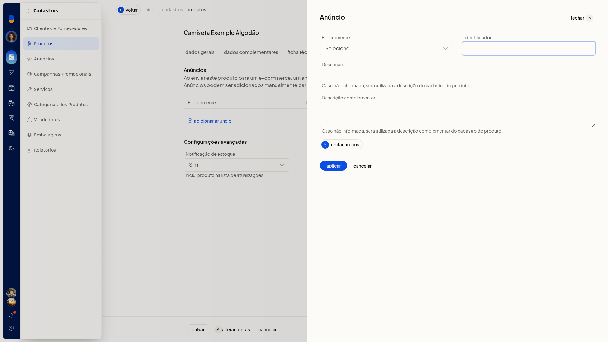
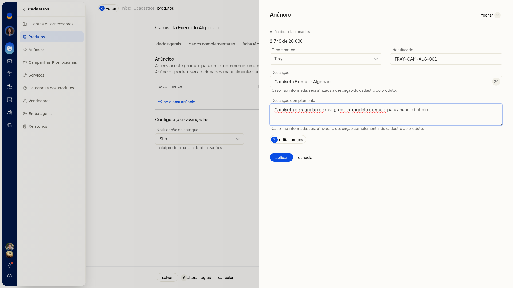

Formas de cadastrar produtos
No ERP da Olist, o cadastro de produto simples reúne os dados para identificar o item, emitir nota fiscal, anunciar, precificar e controlar estoque. Você inclui o produto pela ficha, envia uma planilha ou recebe anúncios de um ecommerce já conectado.
Importante
- Se a opção não aparecer para você, peça acesso ao administrador da conta.
- Para usar o produto em nota fiscal, preencha Nome do produto, Origem do produto conforme ICMS, Unidade de medida e NCM. Esses campos exibem Necessário para emissão de Nota Fiscal. Nenhum campo da ficha mostra asterisco.
- Para lançar preço na aba Preços, a conta precisa ter ao menos uma lista de preço.
- Para vincular anúncio ou receber produtos do ecommerce, a conta precisa ter uma integração conectada.
- Para editar os preços do anúncio, salve o produto antes.
Instruções
Pela tela
-
No menu lateral, acesse Cadastros > Produtos.
-
Clique em Incluir produto.
-
Em Dados Gerais, selecione Tipo do Produto Simples.
-
Preencha Nome do produto. Para nota fiscal, preencha também Origem do produto conforme ICMS, Unidade de medida e NCM. O NCM segue o formato do exemplo 1001.10.10. Use Sugerir ou o aviso Novo para pedir uma sugestão de NCM à Lis.
-
Preencha, se quiser, Código de barras (GTIN), Código (SKU), Código CEST, Preço de venda, Preço promocional, pesos, embalagem e os dados de estoque.

-
Abra Dados Complementares. Atribua a categoria, informe marca, descrição, SEO e imagens, se quiser. Clique em Editar tags para abrir Configuração das tags do produto.
-
Abra Ficha técnica. Informe Atributo e Valor, use sugerir atributos ou adicione outra linha.
-
Abra Anúncios. Clique em Adicionar anúncio, escolha o ecommerce conectado e informe Identificador, Descrição e Descrição complementar. Defina Notificação de estoque como Sim ou Não.


-
Para editar os preços do anúncio, salve o produto antes. A tela avisa Para editar os preços do anúncio é necessário salvar o produto, com salvar produto e editar preços e cancelar.

-
Abra Preços. Escolha uma lista de preço já cadastrada e informe preço e preço promocional.

- Abra Custos. Informe a data em A partir de, saldos, impostos recuperáveis, preço de custo, custo médio e preço de venda.
- Abra Outros. Informe unidade por caixa, garantia, markup, dados tributários, fornecedor e observações, se quiser.
- Clique em Salvar na base da ficha. Antes de salvar, os valores digitados permanecem ao trocar entre as sete abas.
Por planilha
- Acesse Cadastros > Produtos.
- Abra Mais ações e clique em Importar produtos de uma planilha.
- Baixe a planilha modelo. Uma planilha de outro layout pode ter as colunas associadas aos campos do ERP.
- Preencha a planilha sem alterar os cabeçalhos e deixe em branco as células não usadas.
- Preencha Descrição, Situação (Ativo ou Inativo) e Sob Encomenda (Sim ou Não). Para nota fiscal, informe Unidade, NCM com 8 dígitos e Origem de 0 a 8.
- Use termos padronizados, como Sim/Não e os códigos de origem. Categorias seguem Nível 1 > Nível 2 > Nível 3.
- Em imagens, informe até 10 URLs diretas.jpg,.png,.webp ou.jpeg. As colunas 1 a 6 são armazenadas e as colunas 7 a 10 ficam externas.
- Envie a planilha em.xls,.xlsx ou.csv, com até 2 Mb e até 500 registros. Depois do envio, valide o arquivo na prévia Todos, Novos, Atualizados e Com erros. Ícones vermelhos impedem a importação e só um arquivo 100% correto é processado.
Por integração
- Acesse Cadastros > Produtos.
- Clique em Receber do e-commerce. O mesmo início está em Mais ações > Receber produtos do e-commerce.
- Confira o consumo de anúncios da conta: quantidade usada, limite e restante.
- Selecione uma integração já conectada.
- Clique em Avançar para seguir para a tela de novos anúncios.
Informações adicionais
- Na ficha, Código (SKU) é opcional.
- Na planilha, ID em branco cria produto novo. O cruzamento posterior é por SKU ou ID.
- Para variações pela planilha, o código SKU precisa estar como Manual em Início > Configurações > Cadastros > Configurações do cadastro de produtos. Isso não é exigido para o produto simples pela tela.
- Na planilha de variações, o produto pai usa Tipo V, sem estoque próprio. Os filhos usam SKU próprio e Tipo S, K, F ou M, nunca V. Código do Pai recebe o SKU do pai e os atributos usam o formato Nome:Valor||Nome:Valor.
- Kit usa Tipo K nesta planilha. A composição vai em uma segunda planilha.
- Se a descrição complementar do anúncio não for informada, o ERP usa a descrição complementar do cadastro do produto.
- Observações gerais sobre o produto são de uso interno e não são exibidas para o cliente.